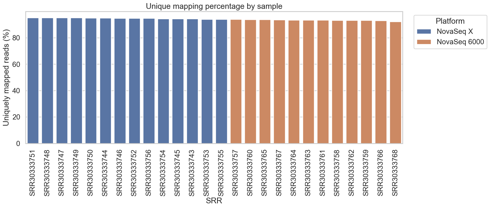
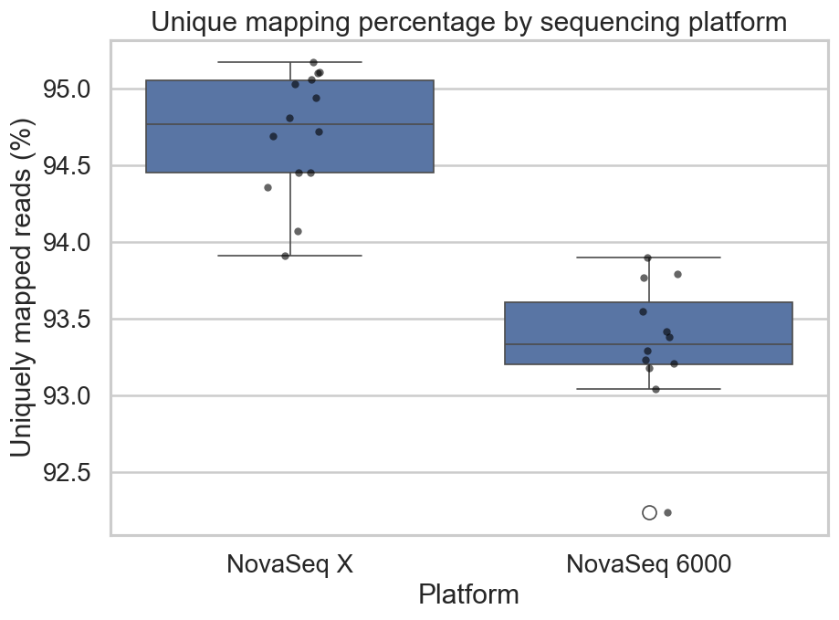
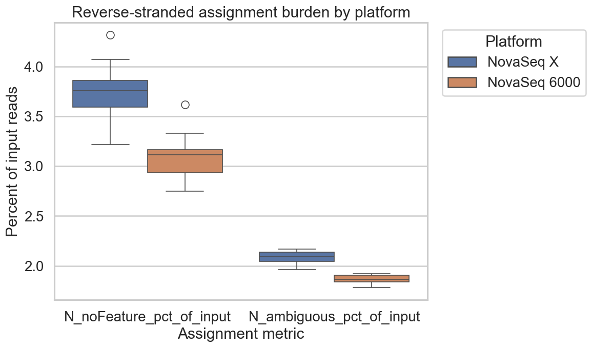
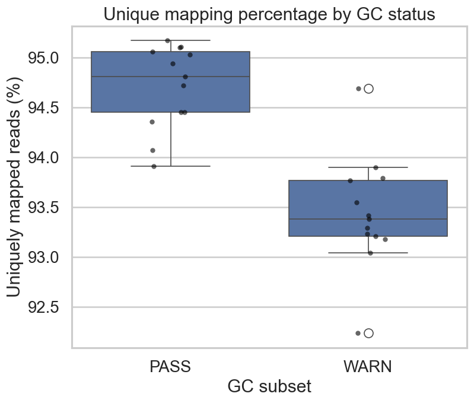

This week, in communication with the team, the mouse project moved from QC remediation into alignment validation.
After the full canonical STAR run finished for all 26 paired-end SRRs in
PRJNA1017789 / GSE243308, a local reproducible environment was set up to validate
the alignment outputs independently and to organize the next phase of analysis using a notebook. The local notebook parses all 26 Log.final.out files and all 26
ReadsPerGene.out.tab files, joins those alignment metrics to run metadata, sequencing-platform labels
(NovaSeq 6000 vs. NovaSeq X), and the earlier GC-WARN / GC-PASS classification
from the post-fastp QC review. That produces the sample-level summary table, the grouped alignment
statistics, and the figures used in this report. It also exports the reverse-stranded count matrix from column 4 of
ReadsPerGene.out.tab, an important artifact for the upcoming analysis.
This week’s work marked the transition from cleanup validation into count-level analysis and differential-expression preparation. The alignment results support moving forward with the complete dataset. Across all 26 samples, the median unique-mapping rate is approximately 94%, no sample drops into a failed-alignment regime, and the remaining platform and GC differences look more like structured batch metadata than evidence that any subset needs to be excluded.
Canonical alignment input:
- cleaned FASTQs: full fastp rerun, all 26 SRRs
- canonical input root (private workspace):
/home/pzg8794/mouse_qc_remediation/output/fastp/out/
- reference: GRCm39 + matching Ensembl GTF
(Mus_musculus.GRCm39.dna.primary_assembly.fa,
Mus_musculus.GRCm39.115.gtf)
- mapper: STAR (sjdbOverhang 150, GRCm39 index)
STAR index build (once, private workspace):
STAR \
--runMode genomeGenerate \
--runThreadN 8 \
--genomeDir star_index_sjdb150 \
--genomeFastaFiles Mus_musculus.GRCm39.dna.primary_assembly.fa \
--sjdbGTFfile Mus_musculus.GRCm39.115.gtf \
--sjdbOverhang 150
STAR alignment (per sample):
STAR \
--runThreadN 8 \
--genomeDir star_index_sjdb150 \
--readFilesIn SRR_1.trim.fastq.gz SRR_2.trim.fastq.gz \
--readFilesCommand zcat \
--outSAMtype BAM SortedByCoordinate \
--quantMode GeneCountsLocal validation workflow
Log.final.out files for alignment metrics.ReadsPerGene.out.tab files; extracted special-category rows (N_unmapped, N_multimapping, N_noFeature, N_ambiguous) and gene-level count columns.
Strandedness was treated as reverse, consistent with the Trapnell workflow discussion and
standard dUTP-based bulk RNA-seq library preparation. Column 4 of each
ReadsPerGene.out.tab file was therefore used as the DESeq2 count input.
The local notebook now serves as both the alignment-stage record and the handoff into the DE notebook. It also acts as a reproducibility check, because the same summary metrics can be re-derived locally from the STAR outputs without re-running STAR.
| Grouping | Median unique mapping (%) | Median multi-mapping (%) | Median no-feature (%) | Median ambiguous (%) |
|---|---|---|---|---|
NovaSeq 6000 | 93.34 | 5.49 | 3.11 | 1.86 |
NovaSeq X | 94.77 | 3.82 | 3.76 | 2.10 |
GC-PASS | 94.81 | 3.79 | 3.76 | 2.09 |
GC-WARN | 93.38 | 5.48 | 3.14 | 1.87 |
The pattern here is structured variation, not failure. NovaSeq X and GC-PASS samples align
somewhat better, while NovaSeq 6000 and GC-WARN show modestly higher multi-mapping. The
near-exact overlap between the platform split and the GC-status split suggests that those two labels are largely
tracking the same cohort boundary. More importantly, both subsets remain strong enough to proceed to downstream analysis.

No sample collapses into a failed-alignment regime. The full set stays in a high-mapping range with a median around 94%, which supports using the complete dataset for downstream expression analysis. The lower-performing samples are still worth tracking, but they remain well above a range that would justify exclusion. The full spread across samples also shows that the dataset is not uniform; the grouped differences summarized above are already visible at the individual-sample level.


The left panel confirms the platform-level alignment difference. NovaSeq X aligns somewhat better than
NovaSeq 6000, which is consistent with the newer chemistry producing somewhat cleaner reads. The right
panel shows assignment burden — the fraction of reads assigned to N_noFeature and
N_ambiguous categories — and shows that the two platforms are still reasonably comparable on that metric.
In short, these panels support the interpretation from recent class discussion: the platform boundary behaves
like a real batch-style covariate that should stay explicit in downstream modeling, not like evidence that one
platform failed.

This figure addresses the earlier question of whether the remaining GC-WARN subset should be excluded before
downstream analysis. The alignment result does not support exclusion. GC-WARN samples align somewhat worse than
GC-PASS, but they still map at a high rate and do not form a collapsed outlier group. Because GC-WARN samples cluster
strongly with the NovaSeq 6000 platform, the alignment notebook helps explain the earlier GC bimodality
as a platform-linked shift rather than a trimming failure or a simple biological subgroup. Therefore, the GC label should be
retained as metadata in the DE notebook for interpretation rather than used as a filter.
The main issues at this stage are analytical rather than blocking. The platform split remains visible at alignment, so
platform needs to stay explicit in downstream DE modeling and interpretation rather than being treated as
background noise. The GC-WARN label also remains meaningful, because those samples show modestly weaker unique mapping
and higher multi-mapping, so that flag should carry forward into the count-level and DE notebooks as a tracking label
rather than a filter.
There was also still a workflow-control issue to keep in mind. The shared trimmed FASTQ outputs were audited and confirmed
non-equivalent to the canonical validated fastp run, so the canonical validated input root remains the correct
alignment source. In addition, local BAM / BAI transfer from the server is still large, which is why the local
notebook was designed to validate first from STAR summary outputs (Log.final.out +
ReadsPerGene.out.tab) without waiting for full BAM copies.
The reverse-stranded count matrix produced this week serves as a direct handoff into the differential-expression notebook.
The immediate goal is to fit family-specific DESeq2 models because the dataset still contains meaningful platform and sample-type structure that should be handled explicitly. Pooling all 26 samples into one model without accounting for the NovaSeq 6000 / NovaSeq X boundary would confound platform effect with condition effect, making results harder to interpret. Therefore, the goals for next week will focus on:
platform and GC status as explicit metadata labels throughout downstream interpretation.NovaSeq 6000), tissue-sham (NovaSeq X), and neuron-culture (NovaSeq X).